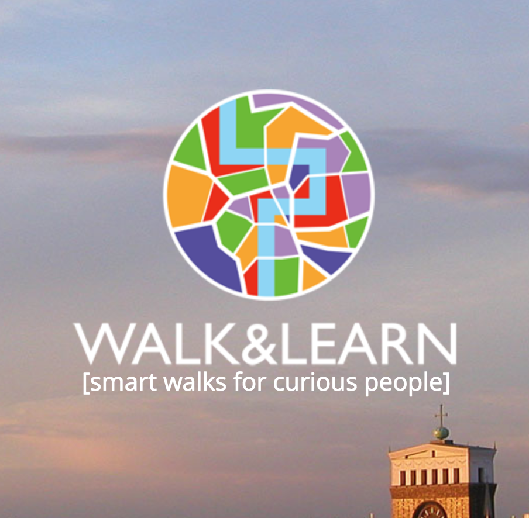
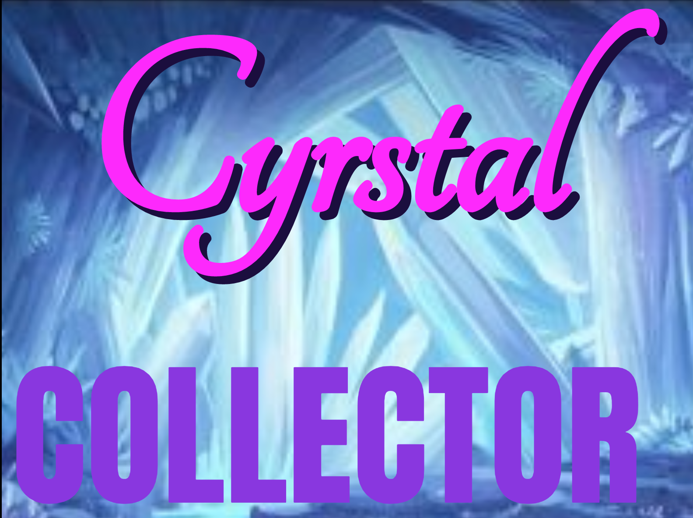
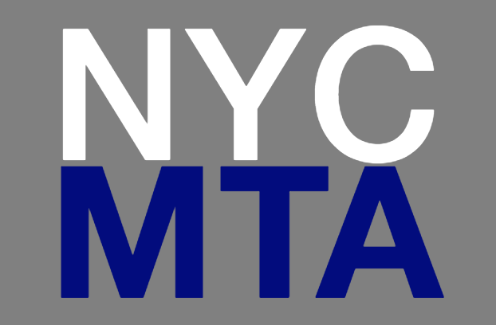
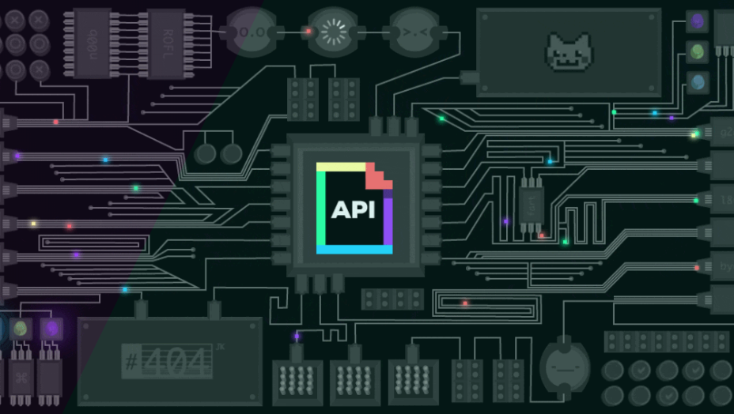
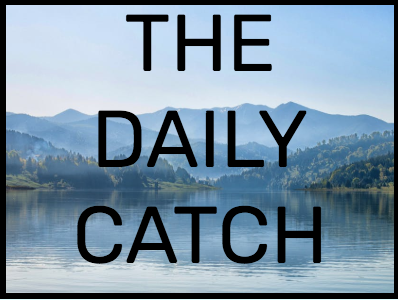
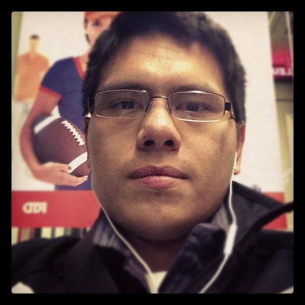

Walk and Learn
A walking-tour experience focused on discovery, place, and lightweight interaction.
View ProjectDenver-based developer
Full-Stack Developer blending finance, product thinking, and clean web experiences.
Portfolio
These projects trace my path through front-end fundamentals, browser-based games, API-driven pages, and collaborative application work.
Selected Work

A walking-tour experience focused on discovery, place, and lightweight interaction.
View Project
A browser game that uses state, score tracking, and event-driven JavaScript.
View ProjectA themed trivia game built around timing, feedback, and game-flow logic.
View Project
A transit schedule project for practicing data entry, time calculations, and UI updates.
View Project
A GIF search interface using the GIPHY API and dynamic page rendering.
View Project
A team project focused on combining features, design decisions, and shared delivery.
View Project
About
Originally from New York City and now based in Denver, Colorado, I bring a business-minded perspective to building web experiences. I studied Finance with a minor in Global Enterprise Technology at Syracuse University, then earned an MSc in International Management from Teesside University while studying at Prague College.
I enjoy turning ideas into usable interfaces, learning new tools, and improving the details that make a project feel clear and approachable.
HTML5, CSS3, Sass, JavaScript, jQuery, CSS Grid, Bootstrap
MongoDB, Express, React, Node.js
Connect